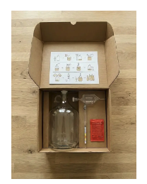
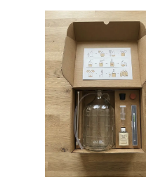

The Father's Day Gift That Feels Illegal But Isn't
For 45 years, brewing beer at home was a federal crime in America. Handing your dad a kit to do it is the most wholesome way to make him feel like he's getting away with something.

There's a particular kind of joy in doing something that feels like you shouldn't be allowed to.
Brewing your own beer at home has exactly that energy. The bubbling jug on the counter. The faint, illicit thrill of making alcohol in your kitchen. The slightly conspiratorial grin when your dad pours a glass and says, "I made this — is that even legal?"
Here's the punchline that makes it the perfect gift: it absolutely is legal. It just spent most of the last century not being — which is exactly the story your dad is going to love telling.
The 45-year accident
Most people assume home brewing became legal the moment Prohibition ended. It didn't. And the reason why is one of the great clerical screw-ups in American history.
When the 21st Amendment repealed Prohibition in 1933, Congress wrote the follow-up legislation that spelled out what ordinary people could once again make at home. Wine made the list — every household was allowed to produce a few hundred gallons for personal use. But beer? Through what historians chalk up to a drafting omission, the word was simply left out. Wine was back. Beer, on paper, was not.
So from 1933 onward, a quiet absurdity sat on the books: you could legally ferment grapes in your basement, but fermenting grain made you, technically, a federal scofflaw. Almost nobody enforced it against a guy with a carboy in his garage — but the law was the law, and it stayed that way for an astonishing forty-five years.
Jimmy Carter, of all people, fixed it
The repair finally came in 1978. Senator Alan Cranston attached an amendment to a larger bill, and on October 14, 1978, President Jimmy Carter signed H.R. 1337 into law. Effective the following February, it carved out a federal exemption letting adults brew beer at home, tax-free, for personal and family use — up to 100 gallons a year per adult, 200 per household.
It is, to this day, one of the more wholesome things a president has ever signed. And it cracked open a door that had been quietly stuck for two generations.
Your dad's gift has founding-father credentials
Here's the part that turns a brewing kit from "a hobby gift" into "a piece of American history he gets to hold." Brewing at home isn't some modern craft-beer affectation — it's older than the country itself.
George Washington kept a handwritten recipe for "small beer" in a 1757 notebook that survives to this day. Thomas Jefferson's household brewed ale at Monticello. For the founders, a jug of home brew wasn't rebellion — it was Tuesday. The thing the United States accidentally banned for 45 years was, in fact, one of its oldest domestic traditions.

So when you hand your dad a starter brewing kit, you're not just giving him a project. You're enrolling him in a lineage that runs from Mount Vernon to his own kitchen counter — with a 45-year prison-break of a backstory in the middle.
The last holdouts (and why it still feels a little outlaw)
Even after 1978, the states took their sweet time. Federal legalization didn't override state law, and a handful of states kept their own bans on the books for decades longer. The very last two — Alabama and Mississippi — didn't legalize home brewing until 2013.
Which means that within living memory, in parts of America, the thing now bubbling cheerfully on your dad's counter was still technically contraband. That's the secret sauce of this gift: it carries just enough whiff of the forbidden to feel exciting, with exactly zero of the actual risk.
The hobby that quietly took over American beer
One more fact for the barbecue. When Carter signed that law in 1978, the United States had fewer than 100 breweries total — a near-extinction event for American beer. Then home brewing came back, and a generation of basement tinkerers turned their kitchen experiments into an industry.
The founders of Sierra Nevada, Sam Adams, and a thousand taprooms you've stood in line at all started exactly where your dad is about to: a plastic bucket, a packet of yeast, and a first batch that may or may not have been any good. The entire American craft-beer renaissance grew out of people legally doing the thing that had felt illegal a few years earlier.
So: which "crime" do you gift him?
Father's Day is June 21. Two ways to make your dad a perfectly legal outlaw:

The perfect small batch brewing kit for his first "is this allowed?" brew. Kitchen-counter sized, beginner-friendly, and actually fun.
Take a closer look →
For the dad ready to test that 200-gallon allowance. Our full-size starter fermentation kit scales up without scaling up the complexity.
See the full kit →Start him small with the 1 Gallon kit if this is his first rodeo, or hand him the 5 Gallon kit if he's the type who'll want to brew for the whole block. Either way, he gets the same story to tell — and a much better Father's Day than another tie.